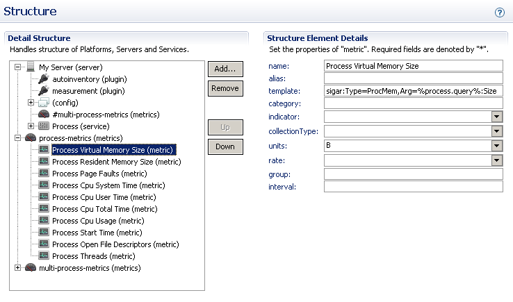
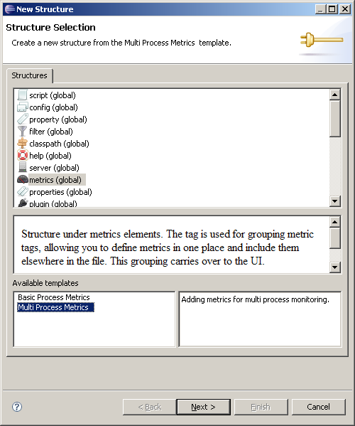
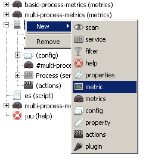

This tab brings ui front-end to part of plug-in descriptor file. Left side of the tab contains tree widget to handle structure of platforms, servers and services tags inside descriptor. When one of the tag is selected from tree structure, right side of the tab will contain fields to modify tag attributes.
There is two different operation what you can do against this tree structure. By selecting one node and pressing right mouse button context menu is shown to give user a choice of different operations. When user want to add sub content to tree, only possible valid options are shown.
If user want to add new master node (platform, server or service) to this tree, new wizard dialog is shown. Using this wizard, it's possible to add new server in similar way how it's done within new project creation wizard. For example if user wants to add new server, available templates can be used to create needed tags to descriptor file together with custom java classes if needed.
Choices which are marked as global are always added to root structure. Others are possible choices related to selected node.
Selecting a node and right clicking will open a context menu. This menu will allow you to remove selected nodes or to add new sub nodes.
